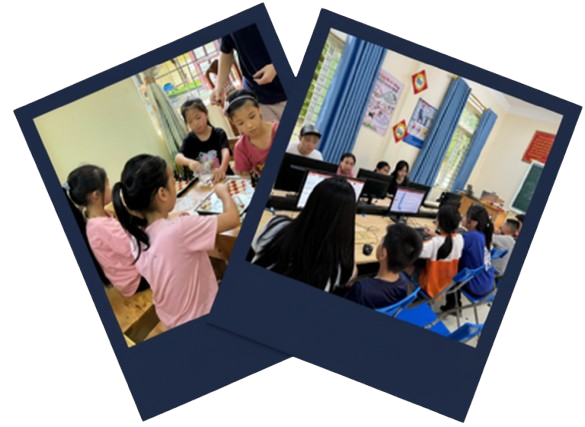
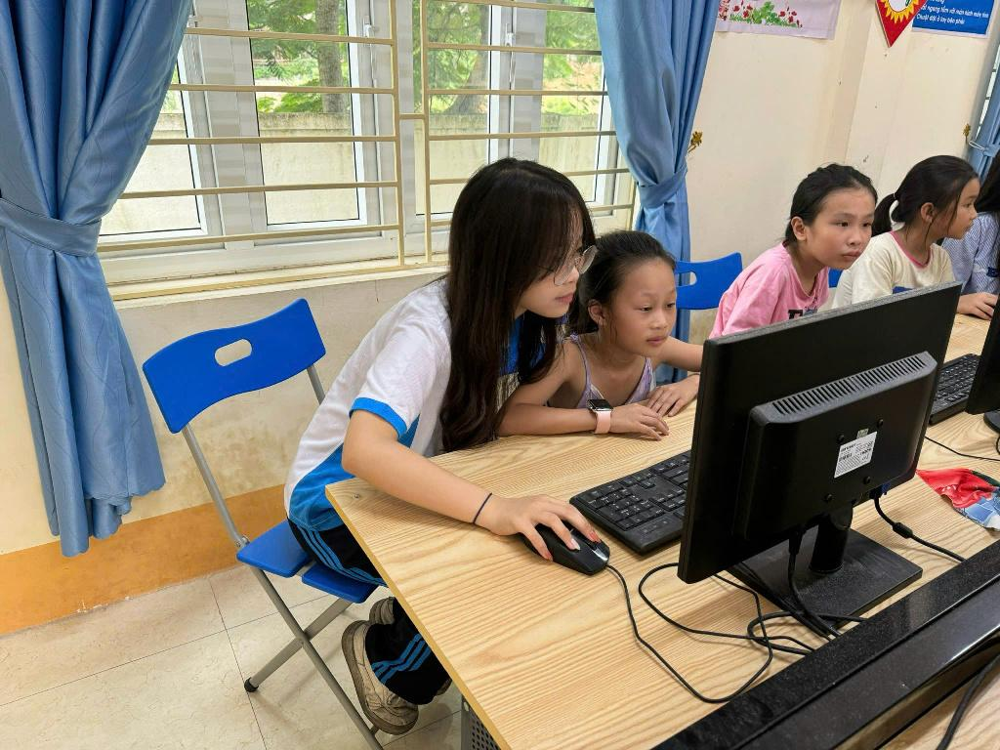
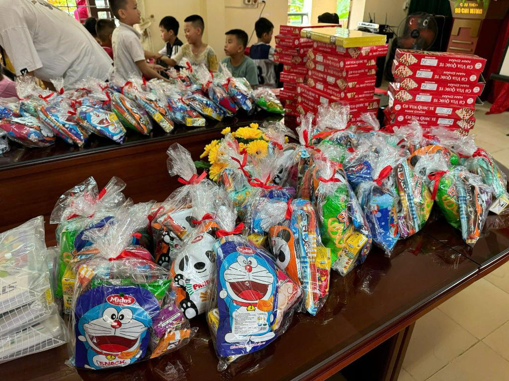
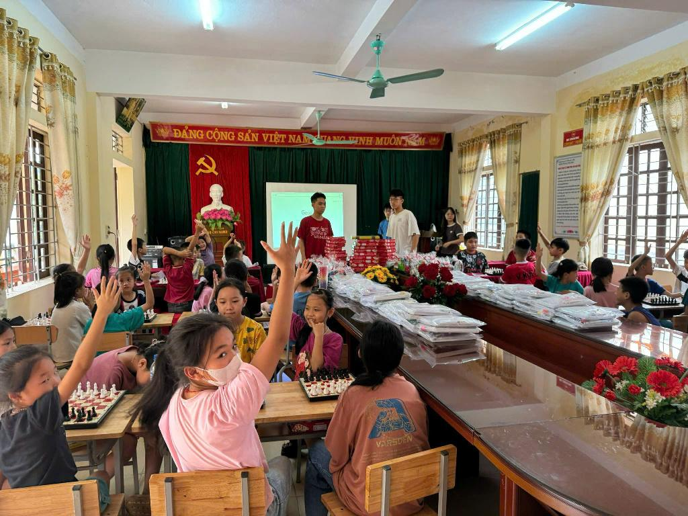

Our Milestones
From a Small Classroom in Quỳ Châu to a Growing Community Movement.
In February 2023, ComChess for Future began its journey in Châu Hạnh 1 Primary School, Châu Hạnh Commune, Quỳ Châu District, Nghệ An Province. What started as a simple idea — combining chess and computer literacy — quickly grew into a life-changing educational initiative for children in underserved communities.
From the very beginning, our goal was clear: to bring free access to digital skills and logical thinking to children who rarely had such opportunities.
- 2023 – We designed and delivered a beginner-level curriculum, covering fundamental computer skills such as Word, Excel, PowerPoint, and safe Internet usage. At the same time, chess lessons were introduced, encouraging students to develop logical reasoning, problem-solving abilities, and focus.
- 2024 – Our programs expanded to include basic programming lessons in Scratch and Python, opening doors for children to explore the world of coding and creativity. Each year, the club’s President and core members also traveled directly to Quỳ Châu to teach and interact with the students. These visits not only strengthened the bond between volunteers and children but also brought gifts, scholarships, and learning materials to encourage their passion for education.

- Founder/Project President: Nguyen Thuc Ha Le – from Phan Boi Chau High School for the Gifted, directly leading the program on site.

- Gifts and scholarships are present in every teaching session, actively encouraging the children’s passion for learning.
- 2025 – With the dedication of a growing team of 50 volunteers, ComChess for Future had supported more than 150 children and built a community of over 5,000 social media followers who share in its mission and vision.

- The children enthusiastically engage in the lessons.
- None of this would have been possible without people. By recruiting and coordinating a dedicated team of volunteers, we ensured that every child had a mentor to guide, encourage, and support their learning journey.
- Today, ComChess for Future is not just a program. It is a growing community — one that believes in the power of education to transform lives, one child at a time.